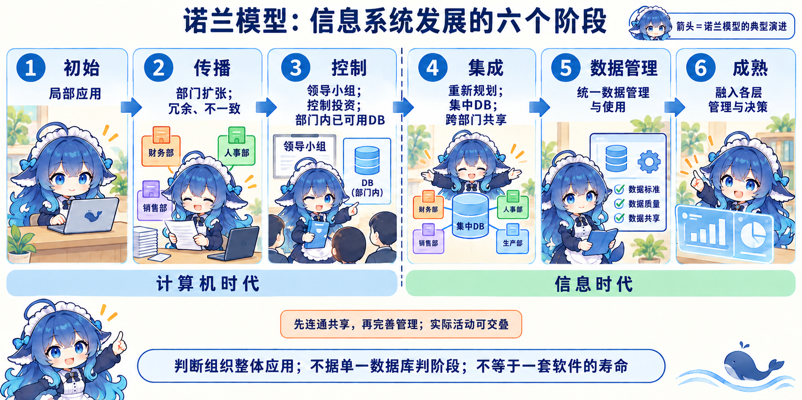
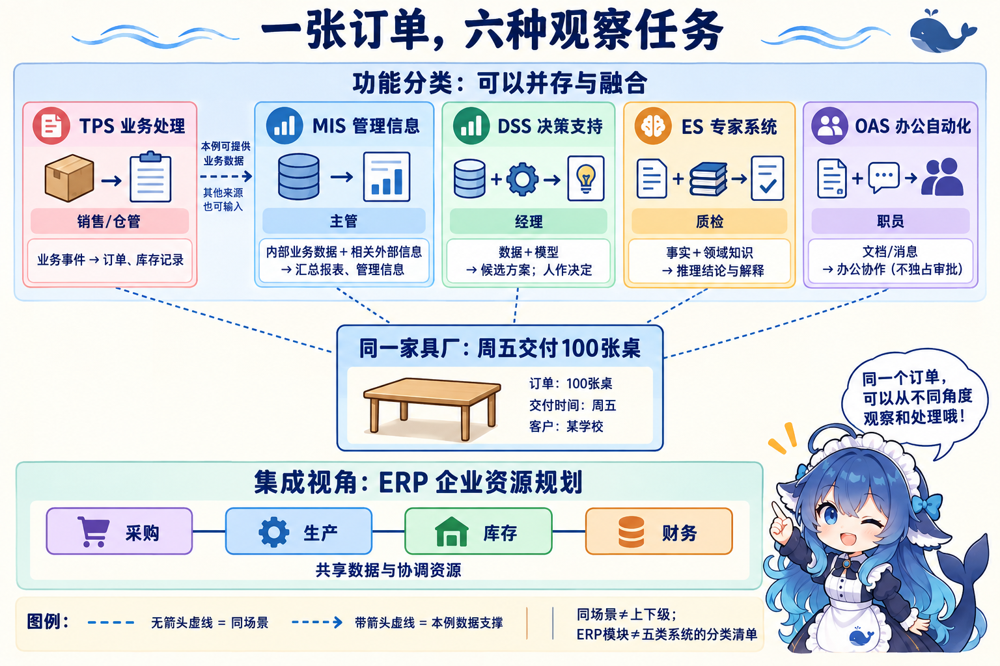
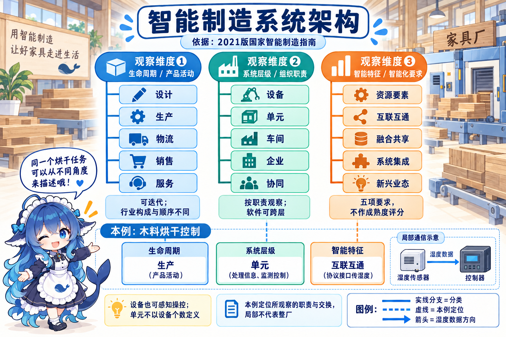
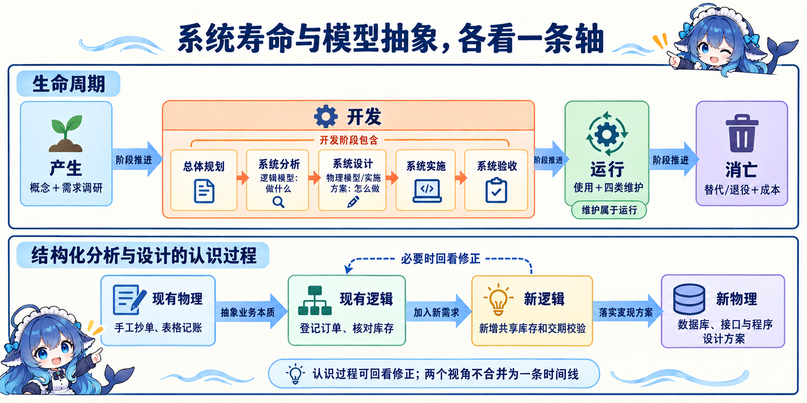
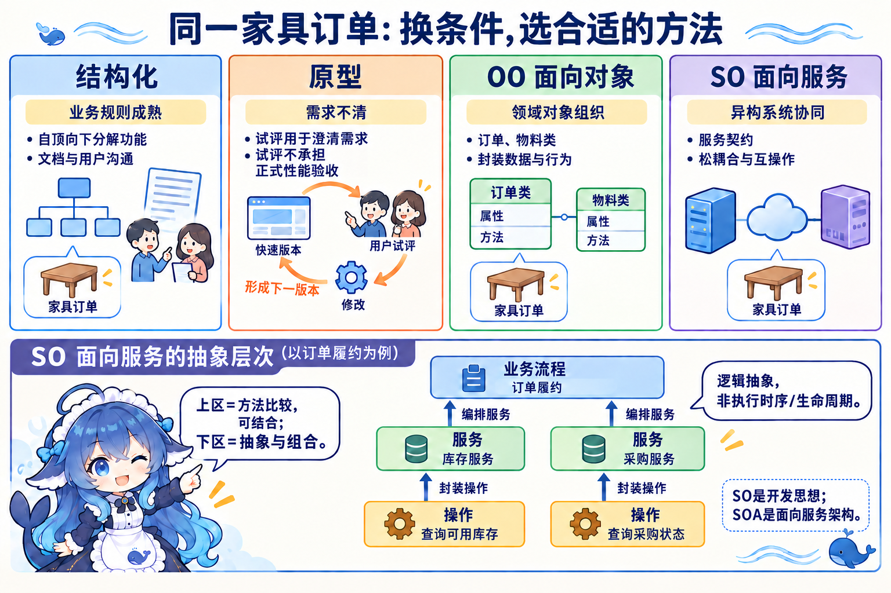
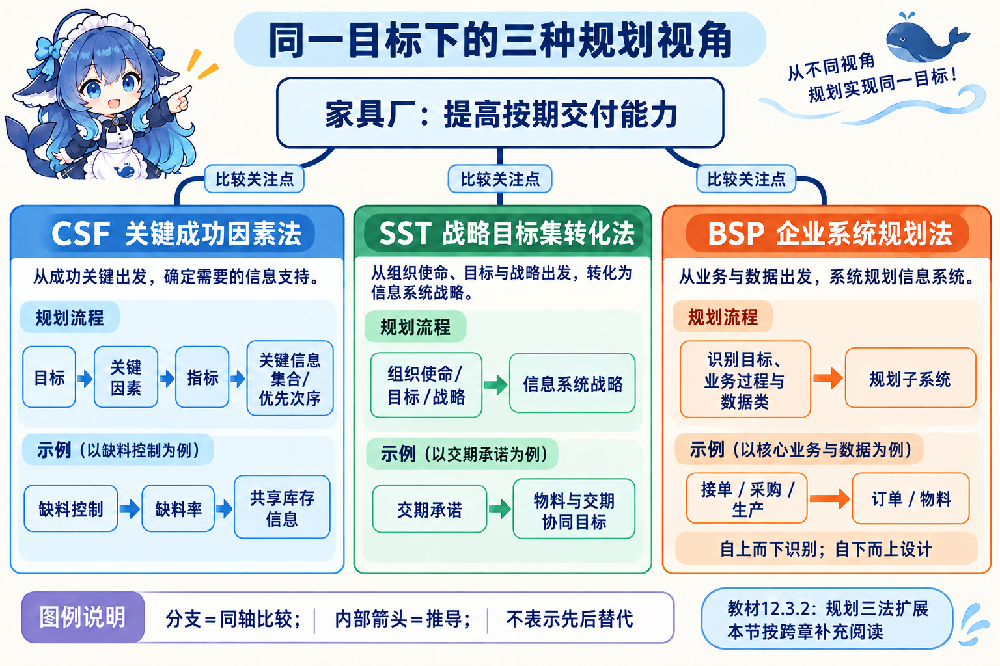

青木家具厂接到一笔周五交付 100 张桌子的订单。销售表里显示“可以接单”，仓库表里显示“还有木料”，到车间下料时却发现，这批木料已被另一订单占用。电脑和表格都能正常工作，交期仍然失守。第三章先从这个断点出发：信息怎样变成可以共同执行的业务行动？
本例是一家虚构小型家具企业，订单、异常和系统选择均用于教学。先看系统由什么组成，再看企业如何使用它、系统一生经过哪些阶段，最后选择建设的方法。这几个问题各有自己的分类轴。
两张表之间，还缺人和规则 3.1.1
IS，Information System，信息系统，收集、存储、处理和传递信息，供人们协作、控制和决策。教材描述的现代信息系统是人机一体化系统，组成包括计算机硬件、网络和通信设备、软件、信息资源、信息用户、规章制度。销售和仓管员怎样定义“可用库存”，谁有权预留物料，同样属于系统的工作条件。
“组成”回答有哪些要素；“功能”回答完成什么活动。五个基本功能是输入、存储、处理、输出、控制。录入订单是输入，保存记录是存储，把账面库存减去已预留数量是处理，交期和缺料清单是输出，权限、校验规则及各环节的管理体现控制。一个软件部件可以承担几种功能，用户也会输入数据、使用输出结果，不能把六种组成与五种功能一一配对。


家具厂可以先用共享单据和明确的预留规则解决冲突，再决定技术怎样实现。广义的信息系统也包括手工单据及其处理规程。讨论本章的计算机信息系统时，再采用人机一体化的具体组成口径。数据加工既有校验、汇总、计算，也可能采用后文的分析技术；TPS 的普通事务处理就不要求先部署数据仓库。
信息化以信息资源的开发、利用为核心，以技术为依托，还要配合组织、人员和规程。把纸单变成电子表格，只改变了载体；统一“可用量”的定义、明确预留责任、培训仓管员，才让信息持续服务交付。设计者因此需要同时理解计算机和网络的能力、用户的业务知识与行为，才能安排适当的人机分工。
部门各建一套之后，企业怎样协调 3.1.2
财务室先用计算机记账，属于诺兰模型的初始特征。销售和仓库随后各建应用，使用范围扩大，同时出现重复编码、数据不一致，这体现传播。负责人开始控制采购和投资，成立领导小组，部门内部也可能使用数据库，这是控制。到集成阶段，重新规划和集中数据库支持跨部门共享；数据管理进一步建立统一的数据管理、使用体系；成熟则把信息系统与各层管理需求结合起来。


教材把前三阶段概括为计算机时代，后三阶段概括为信息时代。图中 DB，Database，数据库是数据组织设施，是否已有部门数据库与是否跨部门共享仍要分别看。这个分期帮助解释关注点从计算机应用转向信息资源管理。家具厂接通几个接口，尚未解决订单和物料的共同定义；已经建立数据标准，也可能仍有旧部门应用。现实中的活动可以交叠，六阶段模型用于识别典型变化，不能推导所有组织必须以相同预算、相同速度逐项经历。


同一家具厂，为什么需要不同系统 3.1.3
周五交期已确定，各岗位需要的信息却不同。仓管员要登记一笔出库，主管要看到缺料汇总，经理要比较加班和外包的得失。按功能观察，教材列出 TPS、MIS、DSS、ES、OAS 五类传统系统，并说明它们可以同时存在、相互促进和融合；ERP 则从资源集成的角度贯通业务。六个名称的比较要保留这两种视角。


| 名称与类别 | 本例输入和处理依据 | 输出及人机分工 |
|---|---|---|
| TPS Transaction Processing System 业务处理系统 | 订单、入库、领料等业务事件；按业务规则处理日常事务。 | 订单/库存记录与业务单据。人录入、核对或使用；计算机执行规定处理。 |
| MIS Management Information System 管理信息系统 | 业务数据及所需管理信息；汇总、统计、计划与管理控制。 | 缺料报表、执行情况与管理信息，常支持程序化管理。主管确认指标、读取偏差并行动，系统按规则整理数据；也有 TPS 以外的信息源。 |
| DSS Decision Support System 决策支持系统 | 工时、费用等数据与决策模型，加上外部条件和人的判断。 | 加班/外包候选方案和影响分析，支持半结构化及非结构化问题；人作最终决定。 |
| ES Expert System 专家系统 | 木材异常事实与领域知识；由推理机制应用知识。 | 领域诊断建议及解释。专家供给知识，人核实事实并评估建议，系统执行推理；不据名称保证结论正确。 |
| OAS Office Automation System 办公自动化系统 | 文档、消息、会议等办公事务和协作规则。 | 员工编写内容、沟通协作，系统支持传递、流转及存取。业务系统同样可有审批，OAS 不独占审批功能。 |
| ERP Enterprise Resource Planning 企业资源规划，集成型系统 | 订单、物料、库存、能力和财务等资源数据；计划与跨部门协同。 | 协调采购、生产、库存与财务。人确定目标与约束、处理例外；系统辅助计划并记录执行。可同时体现多种功能，决策结构化程度随任务变化。 |
如果只是把出库登记准确，优先关注事务处理；若问“按现行规则执行后哪里偏离计划”，关注管理信息和反馈；若改变外包价格、可用工时再比较方案，关注决策支持。质检异常需要专家知识推理时，又切换到另一条功能线。DSS 可以用于主管的临时排产问题，MIS 也能服务高层管理，岗位高低不能单独决定分类。


综合系统里，计划、产品资料与现场实绩怎样相接
教材也使用 DPS，Data Processing System，数据处理系统作为 TPS 的历史并用名称，重点仍是日常业务事件。综合性信息系统进一步将相关业务连接起来。ERP 在本节局部称“企业资源管理”，本册统一采用 3.7 题名“企业资源规划”；这两个中文称呼不新增两种系统。
同一订单来到仓库、车间、研发部，各自要处理不同问题。WMS，Warehouse Management System，仓储管理系统关心库位、收发、盘点和仓内物料作业。MES，Manufacturing Execution System，制造执行系统跟踪、记录并控制实际生产过程，例如车间已完成多少桌面、哪批发生质量异常。PDM，Product Data Management，产品数据管理维护产品结构、版本、配置和工程变更，让车间取得正确的桌子规格。它们可与 ERP 集成，部署边界由具体产品和业务决定。
SFC，Shop Floor Control，车间控制在本教材制造场景中与 MES 并用介绍；工程文档中可指车间工单、工序、用料和执行管理功能，范围与 MES 有交叠。某些厂商又用 SFC number 指在制实例/批次的追踪标识。因此见到 SFC 要先问语境，不能把 MES＝SFC 当作普遍命名规则。
车间执行还需要计划输入：MPS，Master Production Schedule，主生产计划说明生产什么产品、多少、何时完成；制定该计划的活动称 Master Production Scheduling。BOM，Bill of Materials，物料清单描述产品需要哪些组成件及其用量。MRP，Material Requirements Planning，物料需求计划利用主计划、BOM、库存等条件计算物料净需求。三者分别是计划、产品结构与计划方法，均不等同于生产现场系统。3.7 将用桌子订单展开计划分解与能力校验。


同一个烘干动作，为什么能有三个位置 制造关联扩展
青木家具厂给这批木料安排烘干。传感器感知湿度，装置执行动作；控制器通过约定的协议和接口收到湿度，处理信息，再监测并调整参数。问“产品正在做什么”，这里是生产活动；问“这项控制职责在哪一层”，观察单元层；问“信息怎样交换”，这里体现互联互通。同一动作在三个维度上的描述可以同时成立。
智能制造系统架构用这三个维度明确标准化对象和范围。本专题采用《国家智能制造标准体系建设指南（2021版）》，放在 3.1.3 制造系统语境下作关联扩展。IMSA 是本册沿用旧学习记录的检索简称；已核国家标准目录的英文标题为 Intelligent manufacturing—System architecture，未核到指南把 IMSA 列作规范缩略语。它没有新增教材 3.8.3 或 3.9。
三条观察轴，分别回答三个问题


生命周期观察产品从原型研发到回收再制造的价值活动：设计实现并优化需求，生产加工、运送、装配和检验物料，物流使物品从供应地到接收地，销售是面向客户的经营活动，服务发生在提供者与客户的接触中。定制桌可以先确认销售需求，再完成设计和生产；售后反馈也能触发设计改进。指南允许活动迭代，不同行业的构成和时间顺序不同。


把视线从装置，移到生产和经营职责
观察传感器与执行装置的实际物理流程、感知和操控，是设备层；观察企业内的信息处理、监测和控制任务，是单元层。这里按职责辨别，不要求单元必须有多台设备，也不排除设备自身具备反馈控制能力。一个控制器作为实物，与它承接的信息控制任务，可以在不同观察问题中被讨论。

条件改成“安排工厂或车间的生产任务”，观察车间层；改成“协调企业订单、采购和成本”，观察企业层的经营管理。青木内部共享计划，再与板材伙伴互通交期、协调供货业务，观察协同层的内外信息共享与跨企业业务协同。内部动作并未被这一层排除，但只出现“多人协同”或一条内部消息，仍不足以证明完整的业务协同已经实现。


智能特征还要看具体实现了什么
| 2021指南名称 | 主要观察对象 | 需要保留的条件 |
|---|---|---|
| 资源要素 | 生产资源、工具及其数字化模型。 | 物理资源和对应数字模型都在观察范围。 |
| 互联互通 | 网络、协议、接口承接数据和参数语义交换。 | 本例实际传湿度；插入网线还不能证明交换可用。 |
| 融合共享 | 在互联基础上，借助云计算、大数据等实现信息协同共享。 | 采购、生产和质检读到含义一致的物料信息，需共享规则和条件。 |
| 系统集成 | 装备、生产单元、生产线、车间、工厂及系统间的数据交换与功能互连。 | 例如执行实绩进入计划应用并由其使用；接口存在不等于业务功能全部接通。 |
| 新兴业态 | 结合物理资源与数字数据、模型、系统，支持认知、诊断、预测、决策及虚实迭代优化。 | 核完整功能与迭代条件；单独装一个预测算法不足以证明这一要求已实现。 |
这五项是指南的智能化要求，不能替换成旧笔记的“数据协同”，也不能当作五级成熟度评分。互联为共享提供条件，具体系统还可能同时体现共享和集成；本例只核协议接口传湿度，不据此宣称全厂五项要求齐全。出现“智能”也没有自动给出每项必须采用人工智能（Artificial Intelligence，AI）的条件。
回到本章已经认识的系统与模型
ERP、WMS、MES/SFC 和 PDM各有经营资源、仓内作业、生产执行、产品资料等职责，具体软件产品可以跨多个层级。先问其在题设中承担什么，再用架构维度描述；名称不会固定生成一层一软件的表。MPS、BOM、MRP 则仍分别是计划、结构资料和计划方法，可继续读3.7 的计划与能力校验。
桌子处于生产活动时，管理订单的信息系统可以处于运行阶段；组织整体的信息化又可以呈现诺兰控制阶段的投资管理特征。这三个对象可以同时描述。3.8 的EAI 四个集成对象另问接起界面、数据、功能还是流程，与本指南五项智能要求有关联，但没有逐项对应关系。
本专题引用明确的 2021 指南。国家标准目录与修订计划的身份分别列在来源中；查到目录标题或计划说明不能当成已读标准全文，也不能据修订计划替换旧题的指南口径。
一套系统的寿命，开发期里的分工 3.1.4
家具厂决定建设订单协同系统。从提出概念、调研需求到开始开发，这是产生阶段。进入开发后，教材再划分总体规划、系统分析、系统设计、系统实施、系统验收五个子阶段。验收并移交后是运行，使用与维护在这里持续进行；以后更新、替代或退役时还需考虑消亡的条件、时机与成本。四个大阶段与五个开发子阶段，是包含与先后的关系。


系统分析形成逻辑模型，回答“做什么”：登记订单、核对库存、识别缺料。系统设计形成实施方案，回答“怎么做”：数据怎样组织，模块和接口如何协作，采用哪些安全控制。题干写“逻辑模型设计”，仍应观察模型的性质，归属系统分析。
总体规划先确定目标、架构、组织及流程、实施计划和技术规范，为后续工作设边界。系统实施把设计落实为可运行系统，需要用户深入参与；实施结束后进入试运行，此时已进入验收阶段。试运行还会暴露性能和友好性问题，修正后按约定要求完成验收。产生阶段的需求调研帮助提出系统概念，开发中的分析则形成明确的逻辑模型，两者粒度和产物不同。


下面四步模型来自本地题源补充，用于解释分析与设计的联系。现状分析先调查纸单怎样抄送、表格怎样记账，得到现有物理模型；再抽象出登记订单、核对库存等业务本质，得到现有逻辑模型。加上共享可用量和交期校验的新需求，形成新逻辑模型，最后设计数据库、接口与程序，落实新物理模型。现有物理到现有逻辑是抽象；新逻辑到新物理是具体化。认识过程中可以返回调查和修正。


四类维护也可用同一系统辨认：修复已发现的库存计算错误是排错性；适应运行平台或外部要求变化是适应性；按新需求改进功能和性能是完善性；为提高后续可靠性、可维护性而提前整理代码和结构是预防性。分类依据是修改目的，不能只看有没有“改代码”。
共同含义和业务规则，由谁确定 3.1.5
销售按“成品套”计数，车间按“原料套”计数，换成同一数据库仍可能冲突。高层需要介入，为总体目标、跨部门协调和资源提供支持；真正使用系统的销售、仓管、排产员需要全过程参与，确认业务边界和可用性。CIO，Chief Information Officer，首席信息官，承担信息规划、政策、标准与资源管理职责。统筹职责不能替代核心用户的业务知识。
自顶向下规划先明确全局数据与流程约束，使订单和物料信息保持一致；各子系统再在总体规划指导下做详细设计。工程化则让阶段工作、文档、审查和验证可以受控。教材还列创新性、整体性、发展性、经济性原则，分别提醒建设考虑先进性、完整性、后续发展和实际投入产出。


家具厂提出“先把所有应用迁上云”，还需要继续回答它解决哪一项业务困难、怎样检验效果。新的技术可以帮助实现目标，技术新旧本身不能成为接单与交付规则的依据。
业务条件变了，建设方法怎样选 3.1.6
对成熟、定型的业务，结构化方法从功能和过程出发，自顶向下逐步分解，强调目标清晰、阶段工作程式化、文档规范化、设计结构化。教材同样要求保持用户沟通。旧笔记“结构化方法用户参与度低”不能当作方法定义。
下料页面怎样操作更顺手尚不清楚时，原型法快速做出可试用的版本，收集评价，再修改完善，帮助细化需求。原型可以服务于局部问题，并与其他开发方法结合；试用反馈不直接证明正式系统的性能和完整性。
OO，Object-Oriented，面向对象，围绕订单、物料等对象和类组织问题域模型，利用封装、继承、多态。分析、设计和实现围绕相关模型衔接，具体质量仍取决于合理的职责与实现。不要由“采用 OO”推出任何项目都会更易扩展。


库存和财务系统来自不同平台，需要合作完成履约时，SO，Service-Oriented，面向服务方法关注业务能力及其契约，支持系统间通信和互操作。SOA，Service-Oriented Architecture，面向服务架构是架构名称，和开发方法的类别要区分。以本地题源采用的抽象口径，查询库存属于操作，库存服务封装相关操作，订单履约业务流程编排库存、采购等服务。松耦合依靠明确契约，不能理解为接口可以含糊。
教材把对象及类进一步按业务功能组织成构件，再通过对外接口合作；服务化强调接口定义与实现解耦，调用方不必依赖内部实现细节。订单对象、库存构件和库存服务之间因此可以有建模与封装上的联系。这条联系不证明所有项目必须按四种开发方法依次替换。


选建设方向，与选开发方法分开 规划扩展
家具厂还要决定先做哪个系统、哪些信息应该共享。CSF、SST、BSP 是总体规划方法，教材支撑位置在 12.3.2，本册放到概述作为跨章扩展。它们可以从同一个组织目标出发，却产生不同的观察重点。
CSF，Critical Success Factors，关键成功因素法，从组织目标识别关键因素、指标及关键信息，帮助确定开发优先次序。提高按期交付能力，可能先找到“缺料控制”这个关键因素，接着明确缺料率等指标，以及为计算指标所需的信息。因素来自具体目标和环境，不固定为几个。
教材还把关键信息向下细化到数据类型、关系和数据字典：例如“缺料数量”按订单还是按物料统计、单位和计算口径是什么。字典定义共同信息含义，能指导需求和数据设计；它还没有决定最终物理表、索引或存储方式。
SST，Strategy Set Transformation，战略目标集转化法，把组织的使命、目标、战略集合转成信息系统战略集合。家具厂的交期承诺，需要转成系统支持物料与交期协同的目标；既要考虑多方要求，也要检查目标是否遗漏。教材采用 Strategy 的展开与“战略目标集”译名，不能只凭旧笔记拼写复制 Strategic。
BSP，Business System Planning，企业系统规划法，自上而下识别目标、业务过程和数据，再通过数据分析自下而上设计信息系统。接单、采购、生产使用哪些订单和物料数据，能帮助规划子系统与总体结构。过程/数据类矩阵用于观察哪些过程创建、使用数据；其作用是规划系统边界，不等于直接设计所有物理数据库表。IBM 原版方法名称采用 Business Systems Planning，本册正文保留本教材的单数写法，并在索引列原版别名。




相邻规划方法，换一个问题再比较 公开原著扩展
家具厂若要让订单与采购共同使用客户、物料资料，SDP，Strategic Data Planning，战略数据规划强调从企业模型和共同数据主题考虑数据组织，支持多个应用使用。应用专用数据随应用扩张易产生重复资料，主题数据组织有助于减少这种扩张；它不保证所有冗余自动消失。这一用途依据 Martin 原著公开片段，客户/物料的主题划分是本册自编示例。
IE，Information Engineering，信息工程连接规划、分析、设计和构造。教材在面向对象方法的背景中，比较偏重处理的结构化路线与偏重数据的信息工程路线，指出过于偏重一侧的局限。Martin 原著进一步从企业目标与技术机会，连到业务过程、过程关系及所需数据，再进入系统设计。家具厂可以先定缩短交期目标，再分析接单、采购和排产需要的共同数据，随后设计实现；与 BSP 的总体规划用途有重叠，但这里继续伸入分析和实现。
SG，Strategic Grid，战略格栅比较现有信息技术对当前运行的影响/依赖与拟建技术的未来战略作用。这里 IT，Information Technology，信息技术是技术领域的通称。先问“今天停机是否影响订单交付”，再问“未来的定制设计服务是否影响竞争策略”。前两种方法主要回答怎样规划数据和实现，SG 换成 IT 作用的观察轴，帮助考虑管理与规划安排。本册依据原始研究解释这两个维度，未把未核的四象限专名或历史代际归属当作必背正答。


已核本地题源问到规划方法演变三阶段：以数据处理为核心，继而以企业内部管理信息系统为核心，再以集成为核心考虑企业内外环境和战略需求。这个考试概括的轴与诺兰六阶段不同。旧笔记列出的所有代表方法历史归属尚未形成同等强度依据，本册不把它们固化为阶段所属清单；BSP 的企业整体规划用途也不能因历史分期被缩成“部门孤岛”。
“补充”里的三层需求，放回组织目标 题库补充
第九组“补充”可核的一条记录讨论组织信息化需求。战略需求关注竞争能力和可持续发展的支持环境；运作需求包括实现信息化战略目标、运作策略、人才培养；技术需求包括完善、升级、集成、整合。三层回答组织为什么推进信息化、怎样运作和怎样获得技术支持。具体软件的“功能需求”还要进一步落实，不能拿它替代这一分类中的技术需求。


本册把它归入 3.1 的明确补充专题，不虚构教材 3.9。第九组其余两题缺少可核原件，保留范围缺口；这不影响教材主干的整理。
回到周五交货这件事
家具厂把软件迁到同一平台，仍要先统一物料含义、预留规则与职责；统一的设备不能自动消除信息不一致。准确登记日常事件依靠事务处理，解释管理偏差需要管理信息，改变约束后比较方案需要决策支持。让这些能力协同，还要做资源集成和建设规划。
面对新题，先确定它观察的对象：组织整体的应用演进、一套系统的寿命、开发期的工作、系统的功能、资源集成，还是规划与建模方法。找准观察轴后，再沿输入、处理依据、输出和条件改变推导选择。后续从 3.2 TPS 开始，逐节把这些职责拆开。